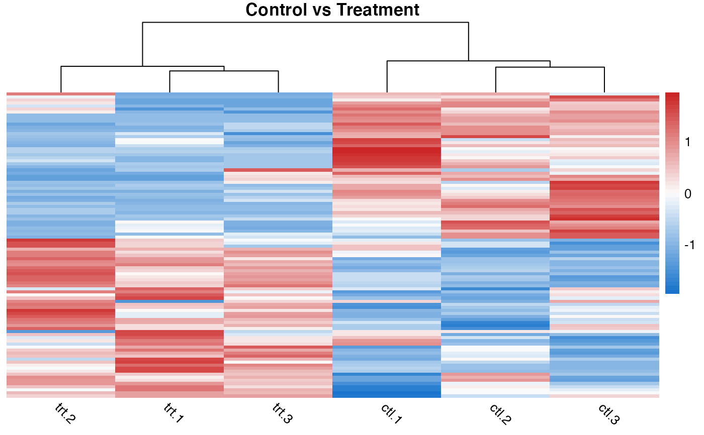
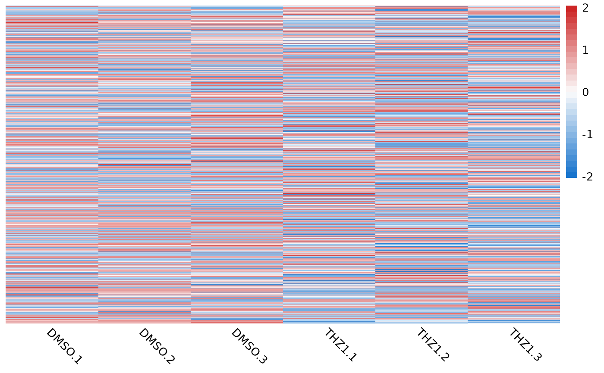

Generate a heatmap using pheatmap with sensible defaults for RNA-seq.
quickmap() will also attempt to perform vectorized scaling, clustering,
and distance calculations with functions from the Rfast,
fastcluster and rdist packages in order to speed up
calculations for large gene expression matrices.
quickmap(
mat,
diverging_palette = TRUE,
n_breaks = 50,
fix_extreme = FALSE,
thresh = 0.5,
removeVar = NULL,
...
)numeric matrix to be passed onto pheatmap function
logical. Default(TRUE). Sets the color scale to a diverging palette (blue -> white -> red). If FALSE, set the
color to a continuous color palette viridis::magma(), useful for un-scaled expression data.
numeric. The number of breaks to use in the color palette. Default 50.
logical. Should the extreme values at the ends of a diverging palette be fixed colors? Default FALSE.
If not NULL remove this proportion of features based on the variance across rows. Default NULL.
args to be passed to pheatmap() function
If fix_extreme is TRUE then what proportion of the extreme values should be filled. For example if the range of the final scaled values is from -20 to 20 and thresh is set to 0.5 then -20 to -10 will be colored blue and 10 to 20 will be colored red. Default 0.5. See examples below.
pheatmap object. See ?pheatmap::pheatmap() for details
The default arguments to pheatmap::pheatmap() are:
scale = "row"
show_rownames = FALSE
border_col = NA
cluster_rows = TRUE
cluster_cols = TRUE
color = colorRampPalette(c("dodgerblue3", "grey99", "firebrick3"))(n_breaks) for diverging_palette = TRUE
color = rev(viridisLite::magma(n = n_breaks)) for diverging_palette = FALSE
treeheight_row = 0
clustering_distance_rows = "correlation"
clustering_distance_cols = "euclidean"
clustering_method = "ward.D2"
angle_col = 315
You can pass in additional arguments or simply override the defaults as well.
# display heatmap of scaled count data and add title to the plot
quickmap(GSE161650_lc, main = "THZ1 vs DMSO")
# Remove 90% lowest variance features and fix color scale at ends
quickmap(
GSE161650_lc,
removeVar = 0.9,
main = "THZ1 vs DMSO",
fix_extreme = TRUE,
thresh = 0.5
)

